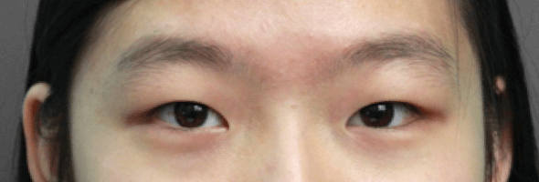
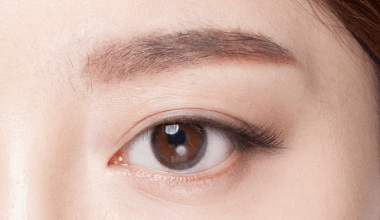
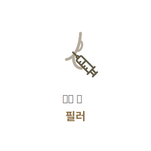

처진눈꺼풀을
생기 있게 UP!
#상안검
성형
-

수술 시간
1시간
-

마취방법
수면/국소마취
-

실밥제거
4~5일 후
-

내원치료
1~2회
-

회복기간
7일 이내
상안검 성형이란?
상안검성형은 눈꺼풀의 처진 피부를 제거함과 동시에 눈꺼풀 속의 늘어진 눈뜨는 근육도 당겨줌으로써
처진 눈꺼풀의 근본적인 원인을 해결해 동안 눈매를 만들어줍니다. 눈의 모양, 기능을 고려하여
눈을 뜰 때도 이마를 이용하지 않고 편해지며 자연스러운 쌍커풀, 젊은 눈매가 될 수 있습니다.
BEFORE
AFTER

상안검 수술방법
나이가 들어갈 수록 늘어지는 눈밑 지방을 눈 안족 결막을 통해 비교적 간단하게 제거하는 수술방법으로
피곤해 보이는 인상을 건강하고 어려보이는 인상으로 만들어 줍니다.
-
1
수술전
개개인의 눈매에 맞는 높이와 라인을
디자인합니다. -
2
처진 피부 제거
처진 피부를 절제하고 돌출된 지방을
제거합니다. -
3
눈꺼풀 근육 강화
늘어진 근육을 당겨주어 결막에
고정합니다 -
4
세밀한 봉합
절개 부위를 꼼꼼히 봉합합니다.
-

5
또렷한 눈매 완성
근본적인 원인 개선으로 활력 있는
또렷한 눈매를 완성합니다.
상안검성형 핵심포인트
시원하고 또렷한 눈매를 위해 연세자연미는
자세한 상담과 진단을 통해 가장 효과적인 방법으로 수술을 진행합니다.


근본적인 원인 해결
피부만 절제하는 것이 아니라 눈을 뜨게하는 근육을
잡아주어확실한 교정이 가능합니다.

다른 주름 방지
이마나 미간으로 눈을 뜨는 현상을 교정하여
주름을 방지하는 효과가 있습니다.

함께하면좋은 시술
연세자연미성형외과는 개인의 상태에 따른 노화 증상과 원인에 맞는
여러가지 시술들을 복합적으로 진행하는 맞춤형 안티에이징 수술법으로
자연스럽게 젊어지는 아름다움을 선물해드립니다.

- 